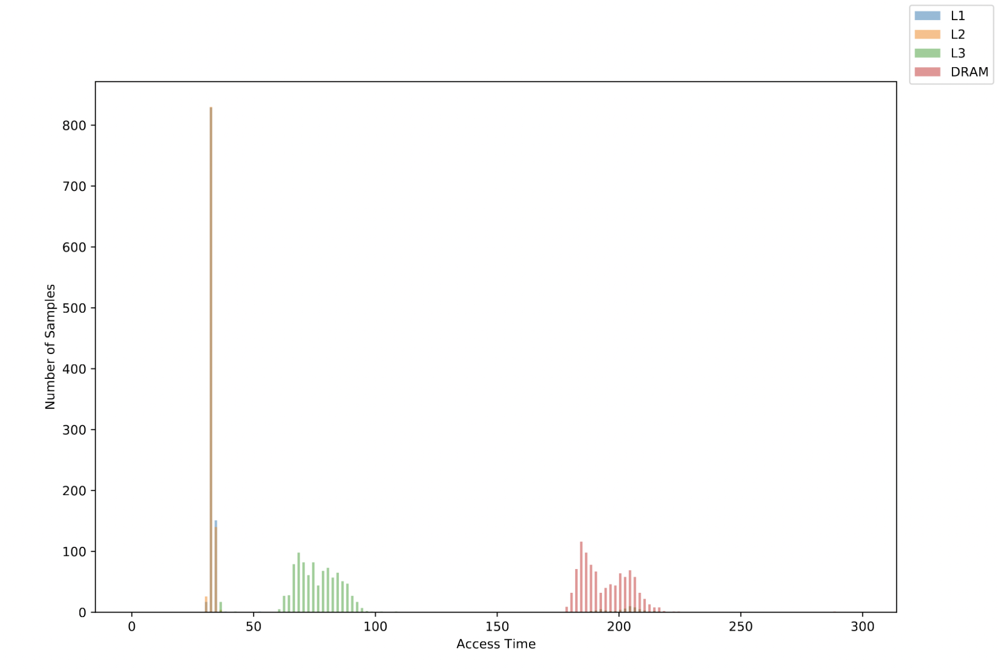

Cache Side Channel Attacks Lab
Due Date: Mar 7; Last Updated Date: Feb 20
Table of Contents
- Introduction
- Part 1: Gathering Information (20%)
- Part 2: Capture the Flag with Flush+Reload (30%)
- Part 3: Capture the Flag with Prime+Probe (50%)
- Bonus: Dead Drop – An Evil Chat Client (10%)
Collaboration Policy
Our full Academic Honesty policy can be found on the Course Information page of our website. As a reminder, all 6.5950/6.5951 labs should be completed individually. You may discuss the lab at a high level with a classmate, but you may not work on code together or share any of your code.
Getting Started
Log in to our lab machine that you are assigned, unicorn.csail.mit.edu for example, via ssh by running ssh username@unicorn.csail.mit.edu.
You will complete this lab primarily in C.
We are using git for all the labs – instructions for setting up the git repository can be found on the labs page.
In addition to submitting code, you are required to submit a PDF lab report containing your answers to Discussion Questions to gradescope. We provide a markdown template in the starter code (report.md).
Introduction
In this lab, you will complete the following tasks:
- Reverse engineer the cache configuration on our lab machine.
- Solve two CTF (capture-the-flag) puzzles using cache-based side channels.
In this lab, you will learn how to interact and manipulate fine-grained cache states in real hardware. Real, commercial hardware is a black box to us. To be able to mount a cache attack, we need to leverage our computer architecture knowledge to infer how a cache behaves for a sequence of instructions. Making the attacker’s life more difficult, real-world caches are far more complex than the toy example caches that we learned in the classroom. After completing this lab, you will hopefully get a glimpse of the complexity of these hardware features.
Getting Prepared Before You Start
You will program in C throughout this lab. C is a low-level language that gives you more control over the hardware compared to high-level languages. Programs written in C can be directly compiled into machine code, and directly executed on the hardware without other abstraction layers. When working on microarchitectural attacks, having a high degree of control over the exact instructions being executed is essential. If you are not familiar with C, we highly recommend participating in the “CTF of C Programming” recitation. You can also get yourself familiar with C syntax by looking at the recitation materials.
You will need to think about how the cache works while working on this lab. Our lab machine is huge (with 96 cores) and has a relatively complex cache hierarchy. We highly recommend you also attend the “Cache Attack” recitation, where we give an overview of the processor architecture of our lab machines. Knowing the overall organization may help you think and debug. You can also look up relevant information following the recitation materials (link will be available soon).
Setting Up Your Environment
You will run your attacks using two CPU cores on the lab machine. Every student will get a different pair of CPUs such that your programs do not interfere with each other. Each pair of CPUs provided is a pair of SMT (aka, Simultaneous MultiThreading) cores. These two “logical cores” map to the same physical core and share multiple hardware resources associated with that core, such as private L1 and L2 caches.
Configuration
After logging into the lab machine and cloning your repo, you must modify the
SENDER_CPUandRECEIVER_CPUvariables incpu.mkto your assigned CPUs. You have to do so before running code for any portion of this lab! Only after you have configured these variables, you can remove the$error$line fromcpu.mk. Double check that you have set these values correctly.
Do not use VS Code’s remote ssh plugin to connect to the server! This plugin can introduce a large degree of noise, and is likely to cause your attack to fail.
Part 1: Gathering Information (20%)
Before we begin, think – what is the first step when planning to attack a system? We first need to gather information about the system’s attributes. This rule applies to attacking software, hardware, and even in real-life on non-computing systems! For example, if you wanted to plan a bank robbery, you would first need to figure out the floorplan of the bank, the locations of safes and security cameras, etc. In this part of the lab, you will see a few practical approaches people use to gain detailed microarchitecture information of commodity hardware. You will further get familiar with some common techniques and instructions that we can use to measure execution latencies on processors, which will help you mount your attacks later on.
Part 1.1: Determining Machine Architecture
The simplest way to gather hardware information is to use existing public system interfaces and documentation. Here is a list of commands that can be used to determine machine architecture information on Linux.
lscpu: Provides information on the type of processor and some summary information about the architecture in the machine.less /proc/cpuinfo: Provides detailed information about each logical processor in the machine. (Typeqto exit.)getconf -a | grep CACHE: Displays the system configuration related to the cache. This will provide detailed information about how the cache is structured. The numbers that are reported using this command use Bytes (B) as the unit.
In addition, WikiChip is a good source of information, as it provides information specific to each processor and architecture. You can find a detailed architecture description of our lab machines (Intel Cascade Lake processors) here, which additionally provides the raw latency value for accessing different levels of caches.
1-1 Discussion Question
Fill in the blanks in the following table using the information you gathered about the cache configuration of the lab machine. You should be able to directly obtain the information for the first 3 blank columns using commands above. You will need to derive the number of sets using what you have learned about set-associative caches in 6.1910[6.004]. Raw latency can be obtained from the WikiChip document. The line size of L1 data cache has been filled in for you.
Cache Cache Line Size Total Size Number of Ways (Associativity) Number of Sets Raw Latency L1-Data 64 Bytes L2 L3
Part 1.2: Timing a Memory Access
The information you can get from public sources can be limited, as hardware companies would not like to disclose all of their proprietary design details to general users and potential competitors. An alternative way to gather information is to reverse engineer the processor by running some very carefully designed instruction sequences on the processor and observing their behaviors.
In this part, you will try to reverse engineer the latencies for accessing the cache hierarchy. Specifically, we would like to know how long it takes to access cache lines that are located in the (a) L1 data cache, (b) L2 cache, (c) L3 cache, and (d) the DRAM.
The Reverse Engineering Plan
To measure the L1 latency, we can perform a load operation on a target address to bring the corresponding cache line into the L1 data cache. Then, we measure the access latency by counting the cycles it takes to re-access the same target address using measure_one_block_access_time. We have provided this code for you, and you can compile the starter code using the command make, and then run it with make run.
Your task is to complete the main function in main.c to populate the three arrays dram_latency, l2_latency, and l3_latency. We suggest you start with measuring DRAM latency, since measuring DRAM latencies is the easiest. You can leverage the instruction clflush to place the target address to DRAM.
Measuring L2 and L3 latencies is slightly more complex. To measure the L2 latency, we need to place the target address in the L2 cache. However, simply accessing the target address will make the address reside in the L1 cache. Therefore, need to access other addresses to evict the target address from the L1 cache. Thus, you first need to access the line to bring it into L1, then create cache conflicts to evict it into L2. When it comes to measuring the L3 latency, you need to similarly create cache conflicts to evict the cache line from both the L1 cache and the L2 cache.
Helper Functions
Before you start, make sure you familiarize yourself with C syntax and several useful x86 instructions. Read the code in utility.h and understand the following functions.
rdtscpandrdtscp64: Read the current timestamp counter of the processor and return a 32-bit or 64-bit integer.lfence: Perform a serializing operation. Ask the processor to first complete the memory loads before thelfenceinstruction, then start issuing memory loads after thelfenceinstruction. Other variants of fences exist, such assfenceandmfence.measure_one_block_access_time: Measure the latency of performing one memory access to a given address.clflush: Flush a given address from the cache, evict the line from the whole cache hierarchy so that later accesses to the address will load from DRAM.print_results_plaintextandprint_results_for_visualization: Print the collected latency data in different formats. The default Makefile compiles two binaries:mainusesprint_results_plaintext, whilemain-visualusesprint_results_for_visualization.
Pointer Arithmetic
Pointer arithemetic operations, such as
new_ptr = old_ptr + 1, means moving the pointer forward by one element. For different types of pointers whose element size is different, the actual bytes being moved can be very different. For example, given auint8_tpointer, since each element is 1 byte,+1means moving the pointer foward by 1 byte. However,+1of auint64_tpointer means moving the pointer forward by 8 bytes. We highly suggest to useuint8_tpointers to make your address calculation easier and avoid introducing addressing mistakes. Further details about common C/C++ constructs can be found in the C Programming Recitation.
Visualization Support
Microarchitectural side channels are notoriously noisy, and it is common to get inconsistent latency results from run to run. To combat noise, the most commonly used methodology is to repeat the experiments and plot the distribution of the observed latencies. We have provided two Python scripts to help you launch multiple measurements and visualize these measurements. To install python packages used in these two scripts, please run:
python3 -m pip install matplotlib tqdm
run.py: A python script that will generate 100 runs from themain-visualbinary. It will create a folder (if one doesn’t already exist) calleddata, and it will store all the generated samples there in json format. The script will overwrite the folder if it already exists.graph.py: A python script that will plot the histogram of the samples collected fromrun.py. It will read the JSON files from the folderdataand generate a pdf file of the histogram in a folder calledgraph.
Expected Outcome
When grading we will not check the exact latency numbers generated by your code, since different implementations can yield different latency numbers. For example, it is unlikely that your L1 latency will match the L1 raw latency number from WikiChip. This is because our measurement involves extra latency introduced by the lfence instructions. Besides, other factors such as the frequency of the core and prefetch configurations of the cache can also affect the latency.
If you want to check whether you are on the right track, you should look for the following patterns in your visualized plot. We also include an example plot below.
- There are distinct peaks for DRAM, L3, and L2 latency.
- The L1 and L2 latency do not need to be distinguishable.

A reference memory latency distribution plot
1-2 Exercise
Fill in the code in
main.cto populate the arraysdram_latency,l2_latency, andl3_latency.
DO NOT take latency measurements while also printing. Instead, measure then print.
When debugging your code, it is tempting to write code like this, which we call “measuring while printing”.
for i in l1_cache: # Observe some aspect of the cache state val = time_access(cache line i) # In the same measurement loop, print the observed value out! printf("The cache took %d cycles", val) # Now we go to the next interation and measure againDo not do this! We are no longer in the regular world, we are in the microarchitectural world, where each assembly instruction counts!
What do we mean by this? Under the hood, a “simple” call to
printfinvolves executing a huge number of instructions. When you callprintf, you are going to go to the libc library, doing some string processing, and eventually making a system call into the kernel (so, the entire CPU performs a context switch, and does who knows what else). Think about how many cache lines this call toprintfwill need to read/write – printing anything is a destructive action to the state of the cache.Instead, you should measure then print. We suggest structuring your code like this:
uint64_t measurements[NUM_THINGS_TO_MEASURE] # Measure for i in l1_cache: measurements[i] = time_access(cache line i) # Then, print :) print(measurements)
Tips for Reliably Triggering Cache Evictions
The following tips may help you if you get stuck when you could not observe differences between the L2 and L3 cache latency. A common pitfall is not properly evicting the target address from the L1/L2 cache due to various reasons.
Cache Line Size != Integer Size: To begin with, you should be careful with the the mismatch of access granularities. The smallest operational unit in cache is the cache line, which is larger than the size of an integer. Accessing two integers that fall into the same line (more precisely, that fall within the same cache line size aligned region of memory) will result in a cache hit, and won’t cause an eviction. So make sure to use eviction addresses that do not map to the same cache line when attempting to evict.
Advanced Cache Replacement Policy: The cache replacement policy in modern processors is more advanced than the simple policies that we learned in class, and is often not completely known to us. It may intelligently decide to keep a target address in the cache, rather than evicting it. To combat the advanced replacement policy, we suggest accessing the eviction buffer multiple times.
Virtual to physical address translation: Intuitively, we would imagine that given a cache, if we have a buffer whose size matches the cache size, then accessing each element in the buffer allows us to fully occupy every slot in the cache. However, this may not always be the case, due to virtual to physical address translation. Note that on our machine, the cache mapping is a function of physical address, while the software uses virtual address.
Let’s consider a toy example where a 8KB directly-mapped cache which can hold two 4K pages. If we have a two-page-size buffer, after virtual address translation, we can end up with three posibilities: 1) the buffer covers the whole cache; 2) both pages map to the top half of the cache; and 3) both pages map to the bottom half of the cache.
In this case, how can we reliably evict data from a certain cache level without the control of the address translation procedure? The common trick is to just use a buffer that is bigger than the cache itself – between 1.5x or even 4x of the cache size. Even though the eviction might still not be guaranteed, its likelihood is high enough.
1-3 Discussion Question
After completing your code, generate the histogram pdf file and include it in the lab report.
1-4 Discussion Question
Based on the generated histogram, report two thresholds, one to distinguish between L2 and L3 latency and the other to distinguish between L3 and DRAM latency.
Submission and Grading
You will need to submit the code Part1-Timing/main.c to your assigned Github repository. Your code should be able to reproduce the histogram you submitted. You can determine whether your implementation is correct by check the description in expected outcome. Due to noise, we will run your code multiple times (5 times) and grade based on the best results. You should feel comfortable to submit your code as long as it can generate the expected results most of the time.
Part 2: Capture the Flag with Flush+Reload (30%)
From now on, we are entering attack time. In this part of the lab, you will be attempting to extract secrets from a victim program. You will get a taste of solving a Capture-the-Flag (CTF) puzzle. The future labs will follow a similar pattern.
Get to Know the Victim
We provide you with a victim program in Part2-FlushReload/victim, whose pseudocode is listed below. The victim program uses mmap to map a file into its own virtual address space to create a buffer. It then generates a random integer as the flag and uses the flag to index into the buffer. Your task is to learn the flag value by monitoring the victim’s memory accesses using a Flush+Reload attack.
// Allocate a large memory buffer
char *buf = get_buffer();
// Set the flag to random integer in the range [0, 1024)
int flag = random(0, 1024);
printf(flag);
// Main loop
while (true) {
value = load(buf + flag * 128);
}
The Attack Setup and Your Plan
We have set up the attack framework that enables your attacker program to share a memory region with the victim. It uses a technique called memory-mapped file, where two virtual addresses (one from your program’s address space and the other from the victim’s address space) are mapped to a same physical address, which contains a copy of a file on the hard drive. You can use the figure below to understand what is happening under the hood.

The buf in the victim program and the buf in the attacker program point to the same physical address
Your attack should implement standard Flush+Reload. We are providing you with the attack skeleton and several practical tips.
- Flush: Flush all the cache lines that might be accessed by the victim to DRAM using
clflush. Be careful with the aforementioned cache line granularity issue. Note that cache size != integer size. - Wait: Wait a few hundred cycles for the victim to perform the flag-dependent memory load operations. Don’t use the system-provided
sleepfunction to do this – similar toprintf, this function will trigger a system call, potentially destroying cache states. - Reload: Re-access all the cache lines in the Flush step and measure the access latency to each of them. Use the threshold derived from Part 1 to decode the flag value.
2-1 Exercise
Complete the code in
Part2-FlushReload/attacker.cto successfully extract the secret values fromPart2-FlushReload/victim.To test your attack, you should first compile your code using
makeand generate a file for the shared buffer usingpython3 gen_file.py. Then use tmux, screen, or simply two SSH connections, and runmake run_victimin one terminal andmake run_attackerin another terminal. Make sure you are NOT executing./victimor./attackerdirectly because they will not launch the binary on your assigned cores. If you have problems running the victim binary, you may need to runchmod +x victim.
Hardware Prefetchers
Modern processors can predict future memory accesses and prefetch data into the cache before it is used. Hardware prefetching is an effective performance optimization technique that is widely deployed in real-world processors. This feature can confuse your attack code. For example, regardless of what the flag value is, some Flush+Reload attack implementation may consistently observe a cache miss for the first reload operation, and cache hits for the rest of the reload operations, because the first load miss triggers hardware prefetching for the later addresses.
Usually, the hardware prefetcher makes address prediction based on simple patterns, such as a linear, fixed-stride access pattern within a page. Therefore, you can bypass the prefetching effects by introducing randomness to your address access pattern.
The prefethers are enabled on the lab machines. Make sure you have avoided aforementioned simple access patterns in your code.
2-2 Discussion Question
In the victim’s pseudocode above, the victim attempts to load the data indexed by
flaginto thevaluevariable. How can you change the victim’s code to load the desired data without leaking the flag to the attacker?
Submission and Grading
You will need to submit the code Part2-FlushReload/attack.c to your assigned Github repository. Your code should be able to reliably capture the flag. Due to system noise, we will grade this part by executing your code multiple times. Full credit will be awarded if your code works at least 4 out of 5 runs.
Part 3: Capture the Flag with Prime+Probe (50%)
We will now solve a more challenging CTF puzzle, leaking the flag using a Prime+Probe attack. In this setup, the attacker and the victim no longer share memory, and thus Flush+Reload will not work. Instead, to make the attack work, you need to carefully manipulate cache states and trigger cache set-conflicts.
Get to Know the Victim
We have created several victim binaries, victim-N, whose pseudocode is listed below. Each victim program generates a random number as the flag. Then it finds a collection of addresses that all map to the same L2 cache set whose set index matches this flag value. The value N denotes the number of cache lines being accessed by the victim, reflecting the strength of the side-channel signal. Intuitively, using a smaller N means the victim accesses fewer ways in a given cache set, and the generated side-channel signal is weaker, making attacks more difficult.
We have provided the binary for victim-[16,4,3,2], where victim-16 accesses the full cache set and is the easiest to attack. To get full credit for Part 3, you have to make your attack work on victim-16 and victim-4. See the detailed grading policy later.
// Allocate a large memory buffer
char *buf = get_buffer();
// Set flag to random integer in the
// range [0, NUM_L2_CACHE_SETS)
int flag = random(0, NUM_L2_CACHE_SETS);
printf(flag);
// Find N addresses in buf that all map to the cache set
// with an index of flag to create a partial eviction set
char *eviction_set[N];
get_partial_eviction_set(eviction_set, flag);
// Main loop
while (true) {
for (int i = 0; i < N; i++) {
// Access the eviction address
(*(eviction_set[i]))++;
}
}
Before Attacking: Cache Addressing
Given the victim’s behavior described above, you will build a Prime+Probe covert channel targeting the L2 cache.
Similar to previous parts, the addresses you are dealing with in your C code are virtual addresses while physical addresses (which you will not have access to within your code) are used when indexing into caches. This fact can be more problematic in this part because you might need to do more careful calculation on the addresses. For a review of virtual memory and address translation, please refer 6.191’s (6.004’s) lectures on Virtual Memory 1 and Virtual Memory 2.
It is very tempting to “fudge” the numbers in this lab (e.g., hypertuning various parameters to make incremental changes to your attack’s performance). While this approach may work, we really don’t recommend this approach. Instead, take the time to sit down and calculate all the cache parameters before you move forward may save you more time.
Think about the following questions: How many bits are part of the tag in a virtual address? The set index? The offset (within a cache line)? How is this level of the cache indexed (virtually or physically indexed?) Which bits are shared between virtual and physical addresses for both kinds of pages (regular and huge)? You should know the answers to all of these before you start coding!
Addresses look like this to the cache:
And look like this to the paging hierarchy:
You should know what each of these fields does, and how large they are at each level of the cache on the lab machine.
3-1 Discussion Question
Given a 64-bit virtual address, fill in the table below. In the last row, when we say an address bit is fully under the attacker’s control, we mean the address bit is not changed during virtual to physical address translation.
Using 4KB page Using 2MB page Which bits are page offset? Which bits are used as page number? Which bits are L2 set index? Which bits of the L2 set index are fully under your control?
Using Hugepage
The default page size used by most operating systems is 4K bytes. Linux supports Huge pages, allowing programs to allocate 2 MB of contiguous physical memory, ensuring 221 bytes of consecutive physical addresses. You can use the mmap system call as follows to get a buffer using 2MB pages. You can use the command man mmap to understand the semantics for each argument used by this function.
void *buf= mmap(NULL, BUFF_SIZE, PROT_READ | PROT_WRITE,
MAP_POPULATE | MAP_ANONYMOUS | MAP_PRIVATE | MAP_HUGETLB,
-1, 0);
if (buf == (void*) - 1) {
perror("mmap() error\n");
exit(EXIT_FAILURE);
}
*((char *)buf) = 1; // dummy write to trigger page allocation
Besides, you can see if your huge page is being allocated or not by watching the status of /proc/meminfo. Namely, if you run cat /proc/meminfo | grep HugePages_, you should see the number of HugePages_Free decrease by 1 when your code is using one.
Implementing the Attack: Prime+Probe
We outline the attack procedure below and provide a few tips. The most important rule is, do not try to implement everything then test. Modern processors often contain optimizations that make them behave differently from the simplified architectures taught in class. This lab requires experimentation to find working approaches and values. You should not expect your solution to work on the first attempt, so be sure to incrementally build up your solution and verify that each step is working before proceeding.
- Eviction addresses collection: You need to find a group of eviction addresses for each cache set, so that when these eviction addresses are accessed, they can fully occupy a given cache set. This step requires a clear understanding of the cache addressing scheme. We highly suggest you calculate twice, code once. Trust us, sitting down to think through cache addressing before coding will save you time.
- Prime: For each cache set, access its corresponding eviction addresses to place these addresses in the cache and fully occupy the cache set. Again, be careful with the mismatch of the size of an integer and a cache line. Repeatedly accessing the same cache line will only bring one line into the cache, far from being able to monitor the whole cache set.
- Wait: Similar to the Flush+Reload attack, wait for a few hundred cycles. Do not use system call functions, such as
sleep. - Probe: For each cache set, re-access the eviction addresses for each cache set and measure their access latency. You can use simple statistic analysis (e.g., median, average, maximum, or median/average/max after removing outliers) to decode the flag.
3-2 Exercise
Complete the code in
attacker.cto successfully extract the secret values fromvictim-[16,4,3,2].Compile your code using
make. Then use tmux, screen, or simply two SSH connections, and runmake run_victim-Nin one terminal andmake run_attackerin another terminal. If you have problems running the victim binaries, you may need to runchmod +x victim-N.
Practical Coding Tips
If the receiver needs to measure the latency of multiple memory accesses, you should pay attention to the following features that can introduce substantial noise to your communication channel.
Randomizing the access pattern during probe: Similar to the Flush+Reload attack, accessing addresses with a fixed-stride pattern can trigger hardware prefetching and introduce confusing measurement results. The problem is that you do not know when you observe a cache hit, the line was always located inside the cache or it was brought into the cache by the prefetcher. Please avoid simple access patterns in your code.
Probe in the reverse direction: While least recently used (LRU) is the most common example of a cache replacement policy, practical processor implementations often use much more complex policies. You may need to experiment a bit to roughly figure out how eviction and measurement works on your processor. With Prime+Probe attacks, it is common to encounter cache-thrashing or self-conflicts, a situation in which the attacker primes the cache set and evicts their own data with subsequent accesses while probing.
For example, consider a 4-way cache using LRU, if we access four pieces of data in the order of
A,B,C,D. Here,Awill be the oldest data andDwill be the youngest. Assume the system has noise where a random application touches a line calledXin this set, evictingAout of cache. Now we haveB,C,D,X, whereBis the oldest andXis the youngest. Think about what if we perform the probe operation and re-accessingA-Din the same order as we prime them, what will happen? We will trigger the cache-thrashing effects where accessingAwill evictB, and the access toBwill evictC. As this pattern continues, we end up with 4 cache misses. As you see, a small amount of noise makes us lose the capability of monitoring the given cache set.Prior work has studied better access patterns to bypassing the cache-thrashing effects. The idea is to access the eviction addresses in one direction in Prime and in the reverse direction in Probe. Following the example above, we will need to access the four addresses in the order of
D,C,B,Aduring probe. More studies on cache attack access ordering have been discussed in Tromer et al.Keep data on the stack: This is more a rule of thumb than a hard “law” of microarchitectural attacks. One of our prior TAs, Joseph Ravi, found that keeping as much of your measured data (i.e., the latencies of memory accesses) on the stack (instead of the heap) as you can reduces noise. Note that, writing your measured data to an array, this operation itself, can introduce noise to our attack. Since stack anyway is frequently accessed, putting the measured data array onto stack may introduce less interference.
Submission and Grading
You need to submit the code Part3-PrimeProbe/attack.c to your assigned Github repository. We give credits if your code can reliably capture the flag in the following victims in 2 minutes, and when we say reliably, we mean your attack works at least 4 out of 5 runs.
Your code needs to first work reliably targeting victim-16 to get 25% of the credits and then victim-4 to get the remaining 75%. If your code can also work on victim-3 and victim-2, bravo! It means your code is extremely reliable. We only see very few students made it work in the past semesters. We would be excited to grant you a 2% bonus credit for victim-3 and 3% bonus for victim-2.
As always, do not forget to include answers to the discussion questions in your lab report and submit the report to gradescope.
Bonus: Dead Drop – An Evil Chat Client (10%)
If you find leaking an integer is not exciting enough, you can level it up to build a covert channel to send and receive arbitrary messages, like an evil chat client that can stealthily communicate without being monitored by privileged software, such as the OS. In this bonus part, you can decide to build a chat client using either Prime+Probe or even some other fancy side channels. There are only very few requirements.
- The sender and receiver must be different processes.
- The sender and receiver may only use syscalls and the functions accessible from the provided
util.hexcept forsystem()andclflush(). There is no way to set up a shared writable address space between the sender and receiver, nor is there a way to call any obviously-useful-for-chat functions such as Unix sockets. - If you would like to use some convenience code that stays within the spirit of the lab, please contact the course staff. Obviously, you may not use pre-packaged code from online for building covert channels (e.g., mastik).
Expected Behaviour
The Dead Drop client should behave in the following way. Using tmux, screen, or simply two SSH connections, we can have two different terminals running on the same machine and run the following commands:
Terminal B: $ make run_receiver // you start the receiver process in a terminal
Terminal B: Please press enter. // the receiver prompts you to press enter to start listening for messages
Terminal A: $ make run_sender // you start the sender in another terminal
Terminal A: Please type a message.
Terminal B: $ // you press Enter in the receiver's terminal
Terminal B: Receiver now listening.
Terminal A: $ Hello. // you type a message and hit enter in the sender's terminal
Terminal B: Hello. // receiver should generate the same message as you entered on the sender's side
Note that you should support messages containing arbitrary number of characters. For example, the message “Hello.” above contains 6 characters and is typed by user together. Then all 6 characters appear on the receiver side. To acheive this, your sender needs to signal the receiver that “the next character is coming” in some way. Partial bonus will be awarded for solutions which only support a limited number of characters in a message.
Submission and Grading
To get the bonus points, you will need to submit your working code to Github. You will then demonstrate your attack in person with a course staff during office hours or in a scheduled meeting. We will be excited to see you take this challenge! 😃
Acknowledgments
Contributors: Miles Dai, Weon Taek Na, Joseph Ravichandran, Mengjia Yan, Peter Deutsch, Shixin Song.
The original Dead Drop lab (The bonus component of this lab) was developed by Christopher Fletcher for CS 598CLF at UIUC. The starting code and lab handout are both heavily adapted from his work.